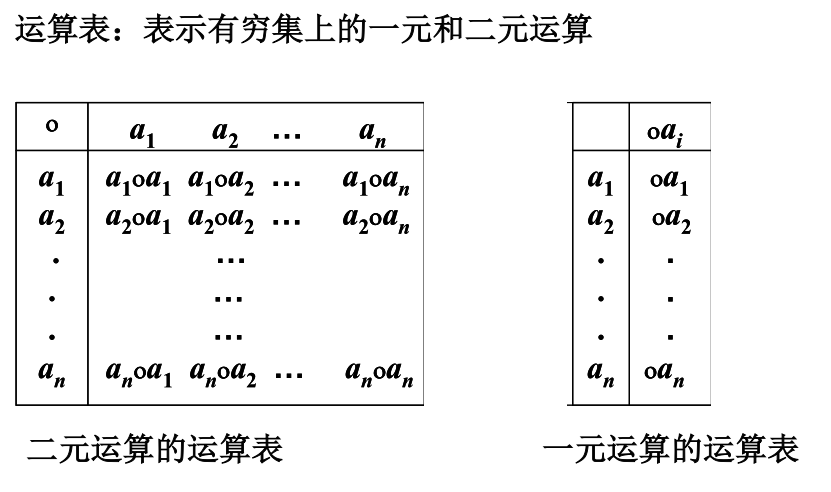
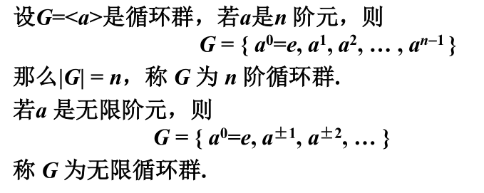

二元运算
设 S 为集合，函数 f ： S × S → S 称为 S 上的 二元运算 S 中任何两个元素都可以进行运算，且运算的结果惟一． S 中任何两个元素的运算结果都属于 S ，即 S对该运算封闭．
一元运算
设 S 为集合，函数 f : S→ S 称为 S 上的 一元运算 
交换律
设◦为 S 上的二元运算, 若对任意 x ,y ∈ S 有 x ◦ y = y ◦ x , 则称运算在 S 上满足 交换律.
结合律
设◦为 S 上的二元运算, 若对任意 x , y , , z ∈ S 有 有 ( x ◦ y )◦ z = x ◦( y ◦ z ), 则称运算在 S 上满足结合律. .
幂等律
设◦为 S 上的二元运算, 若对任意 x ∈ S 有 x ◦ x = x , 则称运算在S 上满足 幂等律.
分配律
设◦和∗为 为S 上两个不同的二元运算, 若对任意x,y,z ∈S有 有 (x∗y)◦z=(x◦z)∗(y◦z)，z◦(x∗y)=(z◦x)∗(z◦y), 则称◦运算对∗运算满足分配律
吸收律
若°和 和∗都可交换, 且对任意x,y ∈S有 有 x◦(x∗y)=x ，x∗ (x◦y)=x,则称◦和∗运算满足吸收律
单位元
与单位元运算为自身
设◦ 为S 上的二元运算, (1) 如果存在e l ( 或e r )∈S ，使得对任意 x ∈S 都有 e l ◦x = x (或 x◦e r = x)，则称e l ( 或e r ) 是S 中关于◦ 运算的左(或右) 单位元. 若e ∈S 关于◦ 运算既是左单位元又是右单位元，则称e 为S 上关于◦ 运算的 单位元. 单位元也叫做 幺元.
存在一行和（和一列），该行（列）所有元素等于他所在列的头
零元
与零元运算为零元
如果存在 θl (或 或θr ) ∈S ，使得对任意 x ∈S 都有θl ◦x = θ θ l (或x◦ θr= θr)，则称θl (或 θr ) 是S 中关于◦ 运算的左(或右) 零元. 若 θ ∈S 关于◦ 运算既是左零元又是右零元，则称 θ 为S 上关于运算◦的 零元.
存在一行和（和一列），该行（列）所有元素该行的头
可逆元素和逆元
与逆元运算为单位元
设◦ 为S 上的二元运算 , 令e 为S 中关于运算°的单位元. 对于x ∈S ，如果存在y l ( 或y r ) ∈S 使得y l ◦x=e （或x◦y r =e）则称y l (或y r ) 是x 的 左逆元 （或 右逆元） ）.关于◦ 运算，若y ∈S 既是 x 的左逆元又是 x 的右逆元，则称y 为x 的 逆元. 如果 x 的逆元存在，就称 x 是可逆的
设*是A上的二元运算 ， 具有左幺元el ，右幺元er ， 则e e l=e r =e
单位元，零元，逆元若存在，则唯一 当 |S| ≥ ≥ 2 ，单位元与零元是不同的； 当 |S| = 1，这个元素既是单位元也是零元
消去律
已知 <A ，* > ，若∀x ，y ， z∈A ，有 (1) 若 x* y = x* z且x ≠ θ, , 则 y=z ； (2) 若 y* x = z* x且 x ≠θ, , 则 y=z ；那么称*满足消去律
代数系统
非空集合S 和S 上k 个一元或二元运算f 1 ,f 2 ,…, f k 组成的系统称为 代数系统, 简称代数，记做<S, f 1 , f 2 , …, f k >. 当Ω ={f 1 ,…,f n }是有限时,代数系统常记为<S,f 1 ,…,f n > 当A有限时,称<A,Ω>是有限代数系统
同类型
如果两个代数系统中运算的个数相同，对应运算的元数相同，且代数常数的个数也相同，则称它们是 同类型的 代数系统.
同种
如果两个同类型的代数系统规定的运算性质也相同，则称为 同种的代数系统
子代数
设V=<S, f 1 , f 2 , …, f k > 是代数系统，B 是S 的非空子集，如果B 对f 1 , f 2 , …, f k 都是封闭的，且B 和S 含有相同的代数常数，则称<B, f 1 , f 2 , …, f k > 是V 的 子代数系统 ，简称子代数. 有时将子代数系统简记为B.
积代数
设V 1 =<A,◦>和 和V 2 =<B,∗> 是同类型的代数系统，◦ 和∗为二元运算，在集合A× ×B 上如下定义二元运算▪，∀<a 1 ,b 1 >,<a 2 ,b 2 >∈A×B ，有 <a 1 ,b 1 >▪<a 2 ,b 2 >=<a 1 ◦ a 2 , b 1 ∗b 2 > 称V=<A×B,▪ > 为V 1 与V 2 的 积代数 ，记作V 1 ×V 2 . 这时也称V 1和V 2 为V 的因子代数
同态
设V 1 =<A,∘>和 和V 2 =<B,∗> 是同类型的代数系统，f:A →B ，且∀x, y∈A有 有 f(x∘y) = f(x)∗f(y), 则称 f 是V 1 到V 2 的同态 映射，简称同态
单同态：f为单射
满同态：f为满射
同构：f为双射
若V1=V2则称为自同态
半群
设V=<S, ∘ > 是代数系统，∘ 为二元运算，如果∘运算是可结合的，则称V为 半群.
幺半群（独异点）
设V=<S,∘ >是半群，若 是半群，若e ∈S是关于 是关于∘ 运算的单位元，则称 运算的单位元，则称V是 含幺半群 ，也叫做 独异点. 有时也将独异点V 记作V=<S,∘,e>.
群
设V=<S,∘>是幺半群，e∈S关于∘运算的单位元，若∀a∈S ，a−1 ∈ ∈S ，则称V 是群. 通常将群记作G
Klein四元群
群的阶
群G 的基数称为群 G 的 阶，有限群G 的阶记作|G|.
有穷群
群G 是有穷集
无限群
群G 是无限集
平凡群
只含单位元（阶数为1 ）的群称为 平凡群
交换群
若群G 中的二元运算是可交换的，则称G 为 交换群 或 阿贝尔 (Abel) 群.
元素的幂
设G 是群，a ∈G ，n ∈Z ，则a 的 的 n 次幂
元素的阶
设G 是群，a ∈G ，使得等式 a k =e 成立的最小正整数 k 称为a 的阶，记作|a|=k ，称 a 为 为 k 阶元. 若不存在这样的正 整数 k ，则称 a 为无限阶元
子群
设G 是群，H 是G 的非空子集， (1) 如果H 关于G 中的运算构成群，则称H 是G 的 子群, 记作H≤G. (2) 若H 是G 的子群，且H⊂G ，则称H 是G 的 真子群 ，记作H<G.
todo 求子群
判定定理
设G 为群，H 是G 的非空子集，则H 是G 的子群当且仅当 (1) ∀ a,b ∈H 有ab ∈H (2) ∀ a ∈H 有a − 1 ∈H.
设G 为群，H 是G 的非空子集. H 是G 的子群当且仅当∀a,b ∈H 有ab −1 ∈ H.
设G 为群，H 是G 的非空有穷子集，则H 是G 的子群当且仅当∀a,b ∈H 有ab∈ H.
平凡子群
对任何群G 都存在子群. G 和{e} 都是G 的子群，称为G 的平凡子群.
子群格
设G 为群, 令L(G) = {H | H 是G 的子群}，则偏序集< L(G), ⊆ > 称为G 的子群格
右陪集
设H 是G 的子群，a∈G.令Ha={ha | h ∈H}，称Ha 是子群H 在G 中的 右陪集. 称a 为Ha 的 代表元素
Lagrange定理
[G:H]是H在G中的陪集数
推论
循环群/生成元
一个元素的不同幂次能构成整个集合
设G 是群，若存在a ∈G 使得G={a^k | k ∈Z}，则称G 是 循环群 ，记作G=<a> ，称 a 为G 的生成元.
循环群的分类：n 阶循环群 和 无限循环群. 
环
设<R,+,·> 是代数系统，+ 和· 是二元运算. 如果满足 以下条件: (1) <R,+> 构成 交换群 (2) <R,·> 构成 半群 (3) · 运算关于+ 运算适合 分配律 则称<R,+,·> 是一个环. 通常称+ 运算为环中的 加法， · 运算为环中的 乘法. 环中加法单位元记作 0 ，乘法单位元（如果存在）记作1. 对任何元素 x ，称 x 的加法逆元为 负元 ，记作−x. 若 x 存在乘法逆元的话，则称之为 逆元 ，记作x ^−1
交换环
设<R,+,·> 是环，若环中乘法 · 适合交换律，则称R 是 交换环
含幺环
设<R,+,·> 是环，若环中乘法 · 存在单位元，则称R 是 含幺环
无零因子环
非零的乘积非零 设<R,+,·> 是环，若 ∀a,b ∈R， ab=0 ⇒ a=0 ∨b=0 ，则称R 是无零因子环
整环
设 <R,+,• > 是一个代数系统, 若满足: (1) <R,+>是阿贝尔群 (2) <R,• > 是可交换独异点，且无零因子 (3) 运算• 对+是可分配的 则称 <R,+,• >是 整环
域
设 <R,+,• > 是一个代数系统, 若满足: (1) <R,+>是阿贝尔群 (2) <R-{0},• >是阿贝尔群 (3) 运算• 对+是可分配的 则称 <R,+,• >是 域
格
设 <S, ≼>是偏序集，如果∀ x,y∈S ，{x,y} 都有最小上界和最大下界，则称S关于偏序 ≼作成一个格 求{x,y} 最小上界和最大下界看成 x 与 与 y 的二元运算 ∨ 和 ∧
对偶定理
设f 是含有格中元素以及符号 是含有格中元素以及符号 =,≼ ,≽ ,∨ 和 ∧ 的命题，令 f* 是将 f 中的 中的≼ 替换成≽,≽ 替换成≼,∨替换成∧, ∧ 替换成∨所得到的命题. 称 f* 为 f 的对偶命题